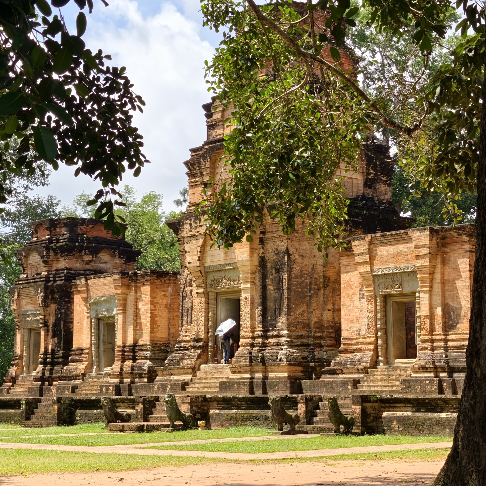
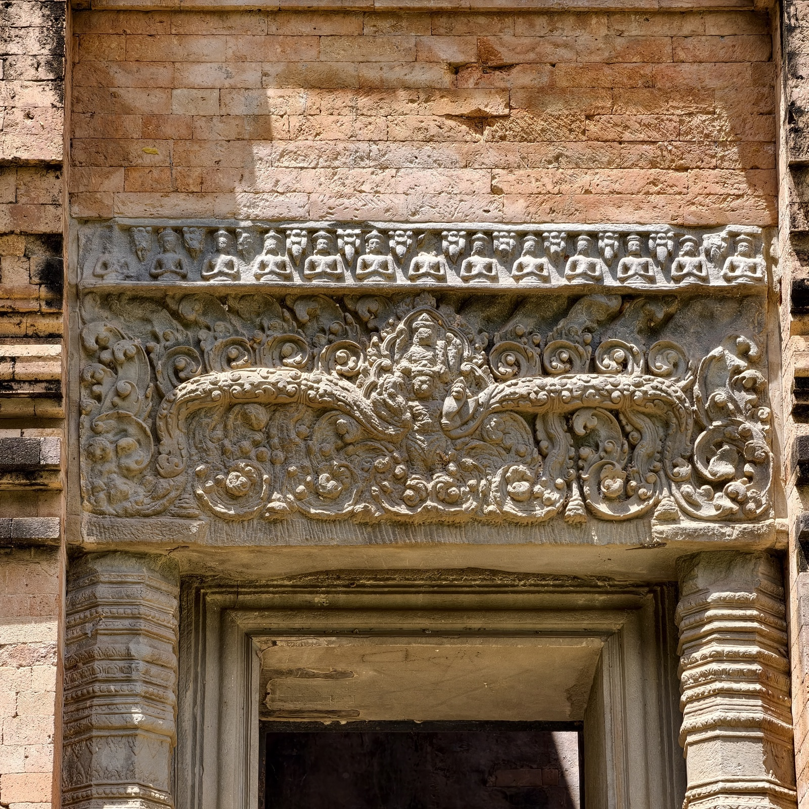
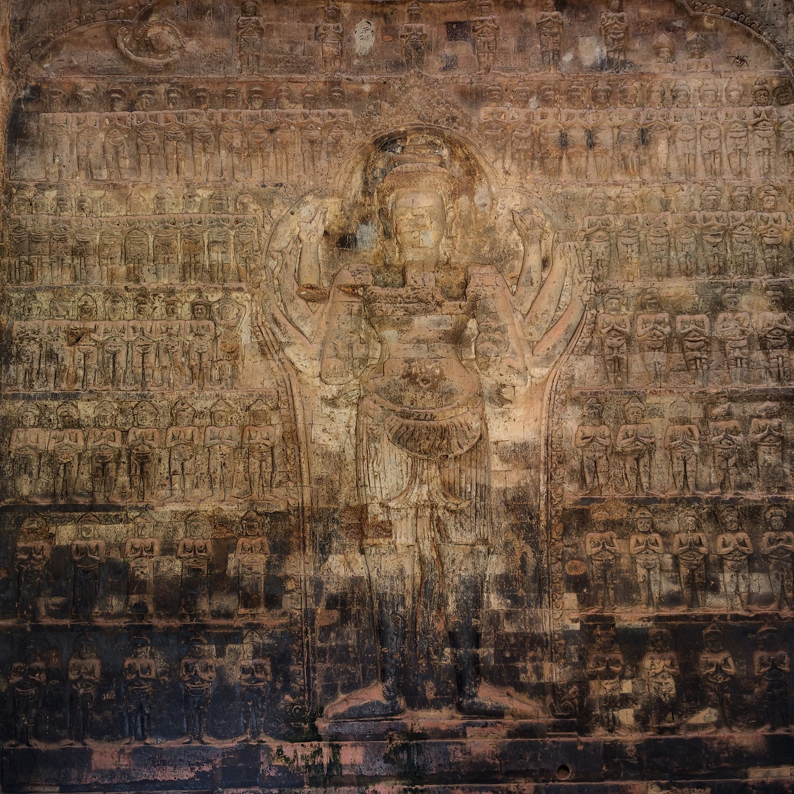
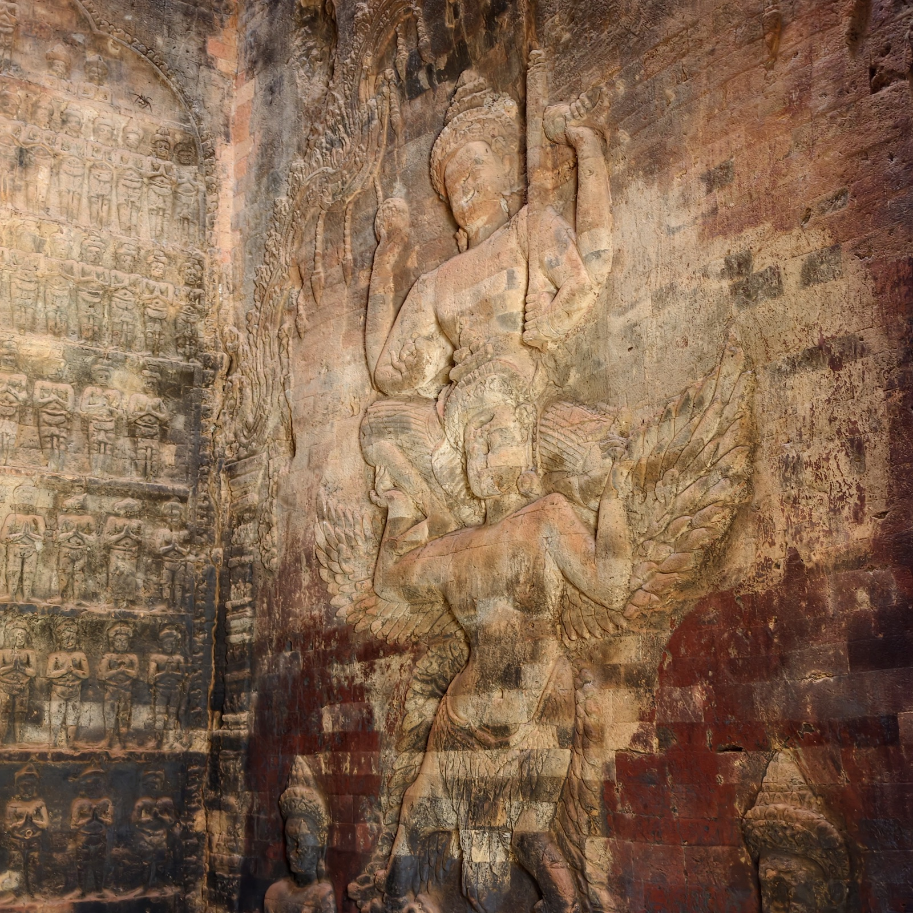
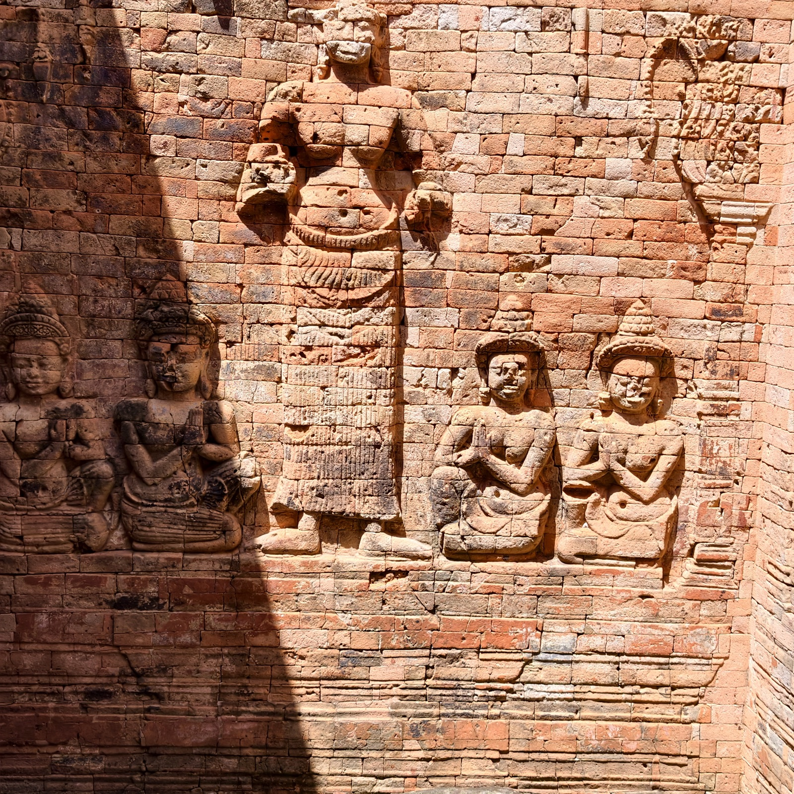
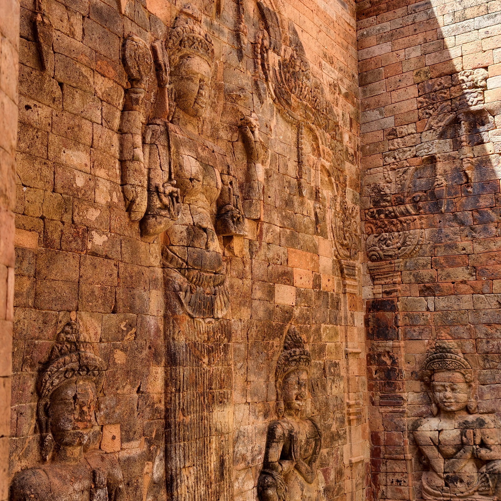
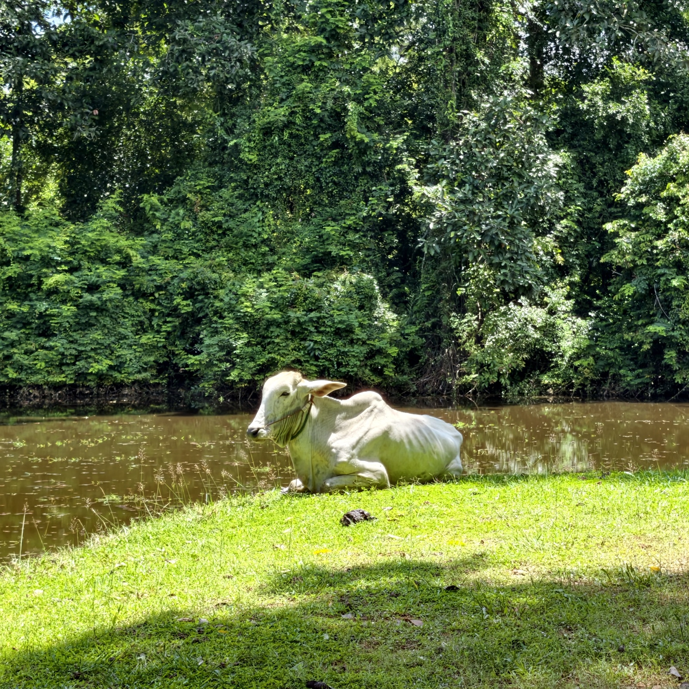

豆蔻寺
豆蔻寺的名字来自庙旁的一棵豆蔻树。它建于十世纪初，九二一年毗湿奴神像正式入祠，正值吴哥王朝王位继承最混乱的一段年月。形制在吴哥遗迹中相当罕见：五座红砖塔沿南北轴线，并排立在一座方形平台上，塔身以小型红砖紧密堆叠，砖缝细得几乎看不见。
最精彩的在塔里：中央塔和北塔的内壁满铺红砖浮雕，是吴哥遗迹中唯一留存至今的壁面红砖浮雕，被称作「高棉红砖艺术的展示室」。庙坐西朝东，清晨阳光斜射入塔时看得最清楚。
三天票的最后一天是大晴天，我们先去了豆蔻寺。




南面还有一幅，讲的是毗湿奴化身侏儒的故事：他向阿修罗王巴利求三步之地，巴利看他身材短小，一口答应——结果第一步跨过天界，第二步跨过人间。


